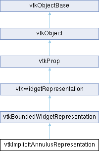

|
Etrek
|
|
Etrek
|
defining the representation for a vtkImplicitAnnulusWidget More...
#include <vtkImplicitAnnulusRepresentation.h>

Public Types | |
| enum | InteractionStateType { Outside = 0 , Moving , MovingOutline , MovingCenter , RotatingAxis , AdjustingInnerRadius , AdjustingOuterRadius , Scaling , TranslatingCenter } |
| Public Types inherited from vtkWidgetRepresentation | |
| enum | Axis { NONE = -1 , XAxis = 0 , YAxis = 1 , ZAxis = 2 , Custom = 3 } |
Public Member Functions | |
| vtkTypeMacro (vtkImplicitAnnulusRepresentation, vtkBoundedWidgetRepresentation) | |
| void | PrintSelf (ostream &os, vtkIndent indent) override |
| void | GetPolyData (vtkPolyData *pd) |
| void | UpdatePlacement () |
| void | BumpAnnulus (int dir, double factor) |
| void | PushAnnulus (double distance) |
| vtkSetClampMacro (InteractionState, InteractionStateType, InteractionStateType::Outside, InteractionStateType::TranslatingCenter) | |
| void | RegisterPickers () override |
| void | GetAnnulus (vtkAnnulus *annulus) const |
| void | SetCenter (double x, double y, double z) |
| void | SetCenter (double x[3]) |
| double * | GetCenter () const VTK_SIZEHINT(3) |
| void | GetCenter (double xyz[3]) const |
| void | SetAxis (double x, double y, double z) |
| void | SetAxis (double a[3]) |
| double * | GetAxis () const VTK_SIZEHINT(3) |
| void | GetAxis (double a[3]) const |
| void | SetInnerRadius (double r) |
| double | GetInnerRadius () const |
| void | SetOuterRadius (double r) |
| double | GetOuterRadius () const |
| void | SetAlongXAxis (bool) |
| vtkGetMacro (AlongXAxis, bool) | |
| vtkBooleanMacro (AlongXAxis, bool) | |
| void | SetAlongYAxis (bool) |
| vtkGetMacro (AlongYAxis, bool) | |
| vtkBooleanMacro (AlongYAxis, bool) | |
| void | SetAlongZAxis (bool) |
| vtkGetMacro (AlongZAxis, bool) | |
| vtkBooleanMacro (AlongZAxis, bool) | |
| void | SetDrawAnnulus (bool draw) |
| vtkGetMacro (DrawAnnulus, bool) | |
| vtkBooleanMacro (DrawAnnulus, bool) | |
| vtkSetClampMacro (Resolution, int, 8, VTK_MAX_ANNULUS_RESOLUTION) | |
| vtkGetMacro (Resolution, int) | |
| vtkSetMacro (Tubing, bool) | |
| vtkGetMacro (Tubing, bool) | |
| vtkBooleanMacro (Tubing, bool) | |
| vtkSetMacro (ScaleEnabled, bool) | |
| vtkGetMacro (ScaleEnabled, bool) | |
| vtkBooleanMacro (ScaleEnabled, bool) | |
| vtkGetObjectMacro (AxisProperty, vtkProperty) | |
| vtkGetObjectMacro (SelectedAxisProperty, vtkProperty) | |
| vtkGetObjectMacro (AnnulusProperty, vtkProperty) | |
| vtkGetObjectMacro (SelectedAnnulusProperty, vtkProperty) | |
| vtkGetObjectMacro (RadiusHandleProperty, vtkProperty) | |
| vtkGetObjectMacro (SelectedRadiusHandleProperty, vtkProperty) | |
| void | SetInteractionColor (double, double, double) |
| void | SetInteractionColor (double c[3]) |
| void | SetHandleColor (double, double, double) |
| void | SetHandleColor (double c[3]) |
| void | SetForegroundColor (double, double, double) |
| void | SetForegroundColor (double c[3]) |
| int | ComputeInteractionState (int X, int Y, int modify=0) override |
| void | PlaceWidget (double bounds[6]) override |
| void | BuildRepresentation () override |
| void | StartWidgetInteraction (double eventPos[2]) override |
| void | WidgetInteraction (double newEventPos[2]) override |
| void | EndWidgetInteraction (double newEventPos[2]) override |
| double * | GetBounds () override |
| void | GetActors (vtkPropCollection *pc) override |
| void | ReleaseGraphicsResources (vtkWindow *) override |
| int | RenderOpaqueGeometry (vtkViewport *) override |
| int | RenderTranslucentPolygonalGeometry (vtkViewport *) override |
| vtkTypeBool | HasTranslucentPolygonalGeometry () override |
| vtkSetClampMacro (BumpDistance, double, 0.000001, 1) | |
| vtkGetMacro (BumpDistance, double) | |
| virtual void | SetRepresentationState (InteractionStateType) |
| vtkGetMacro (RepresentationState, InteractionStateType) | |
| Public Member Functions inherited from vtkBoundedWidgetRepresentation | |
| vtkTypeMacro (vtkBoundedWidgetRepresentation, vtkWidgetRepresentation) | |
| vtkSetMacro (OutlineTranslation, bool) | |
| vtkGetMacro (OutlineTranslation, bool) | |
| vtkBooleanMacro (OutlineTranslation, bool) | |
| vtkSetMacro (OutsideBounds, bool) | |
| vtkGetMacro (OutsideBounds, bool) | |
| vtkBooleanMacro (OutsideBounds, bool) | |
| vtkSetMacro (ConstrainToWidgetBounds, bool) | |
| vtkGetMacro (ConstrainToWidgetBounds, bool) | |
| vtkBooleanMacro (ConstrainToWidgetBounds, bool) | |
| vtkGetObjectMacro (OutlineProperty, vtkProperty) | |
| vtkGetObjectMacro (SelectedOutlineProperty, vtkProperty) | |
| vtkSetVector6Macro (WidgetBounds, double) | |
| vtkGetVector6Macro (WidgetBounds, double) | |
| vtkGetMacro (TranslationAxis, int) | |
| vtkSetClampMacro (TranslationAxis, int, -1, 2) | |
| void | SetXTranslationAxisOn () |
| void | SetYTranslationAxisOn () |
| void | SetZTranslationAxisOn () |
| void | SetTranslationAxisOff () |
| Public Member Functions inherited from vtkWidgetRepresentation | |
| virtual void | PlaceWidget (double vtkNotUsed(bounds)[6]) |
| virtual int | GetInteractionState () |
| virtual void | Highlight (int vtkNotUsed(highlightOn)) |
| double * | GetBounds () VTK_SIZEHINT(6) override |
| void | ShallowCopy (vtkProp *prop) override |
| void | GetActors (vtkPropCollection *) override |
| void | GetActors2D (vtkPropCollection *) override |
| void | GetVolumes (vtkPropCollection *) override |
| void | ReleaseGraphicsResources (vtkWindow *) override |
| int | RenderOverlay (vtkViewport *vtkNotUsed(viewport)) override |
| int | RenderOpaqueGeometry (vtkViewport *vtkNotUsed(viewport)) override |
| int | RenderTranslucentPolygonalGeometry (vtkViewport *vtkNotUsed(viewport)) override |
| int | RenderVolumetricGeometry (vtkViewport *vtkNotUsed(viewport)) override |
| vtkTypeBool | HasTranslucentPolygonalGeometry () override |
| virtual void | UnRegisterPickers () |
| vtkTypeMacro (vtkWidgetRepresentation, vtkProp) | |
| void | PrintSelf (ostream &os, vtkIndent indent) override |
| vtkBooleanMacro (PickingManaged, bool) | |
| void | SetPickingManaged (bool managed) |
| vtkGetMacro (PickingManaged, bool) | |
| virtual void | SetRenderer (vtkRenderer *ren) |
| virtual vtkRenderer * | GetRenderer () |
| virtual void | StartComplexInteraction (vtkRenderWindowInteractor *, vtkAbstractWidget *, unsigned long, void *) |
| virtual void | ComplexInteraction (vtkRenderWindowInteractor *, vtkAbstractWidget *, unsigned long, void *) |
| virtual void | EndComplexInteraction (vtkRenderWindowInteractor *, vtkAbstractWidget *, unsigned long, void *) |
| virtual int | ComputeComplexInteractionState (vtkRenderWindowInteractor *iren, vtkAbstractWidget *widget, unsigned long event, void *callData, int modify=0) |
| vtkSetClampMacro (PlaceFactor, double, 0.01, VTK_DOUBLE_MAX) | |
| vtkGetMacro (PlaceFactor, double) | |
| vtkSetClampMacro (HandleSize, double, 0.001, 1000) | |
| vtkGetMacro (HandleSize, double) | |
| vtkGetMacro (NeedToRender, vtkTypeBool) | |
| vtkSetClampMacro (NeedToRender, vtkTypeBool, 0, 1) | |
| vtkBooleanMacro (NeedToRender, vtkTypeBool) | |
| Public Member Functions inherited from vtkProp | |
| vtkTypeMacro (vtkProp, vtkObject) | |
| virtual void | Pick () |
| virtual vtkMTimeType | GetRedrawMTime () |
| virtual void | PokeMatrix (vtkMatrix4x4 *vtkNotUsed(matrix)) |
| virtual vtkMatrix4x4 * | GetMatrix () |
| virtual bool | HasKeys (vtkInformation *requiredKeys) |
| virtual int | RenderVolumetricGeometry (vtkViewport *) |
| virtual int | RenderOverlay (vtkViewport *) |
| virtual bool | RenderFilteredOpaqueGeometry (vtkViewport *v, vtkInformation *requiredKeys) |
| virtual bool | RenderFilteredTranslucentPolygonalGeometry (vtkViewport *v, vtkInformation *requiredKeys) |
| virtual bool | RenderFilteredVolumetricGeometry (vtkViewport *v, vtkInformation *requiredKeys) |
| virtual bool | RenderFilteredOverlay (vtkViewport *v, vtkInformation *requiredKeys) |
| virtual vtkTypeBool | HasOpaqueGeometry () |
| virtual double | GetEstimatedRenderTime (vtkViewport *) |
| virtual double | GetEstimatedRenderTime () |
| virtual void | SetEstimatedRenderTime (double t) |
| virtual void | RestoreEstimatedRenderTime () |
| virtual void | AddEstimatedRenderTime (double t, vtkViewport *vtkNotUsed(vp)) |
| void | SetRenderTimeMultiplier (double t) |
| vtkGetMacro (RenderTimeMultiplier, double) | |
| virtual void | BuildPaths (vtkAssemblyPaths *paths, vtkAssemblyPath *path) |
| virtual bool | GetSupportsSelection () |
| virtual void | ProcessSelectorPixelBuffers (vtkHardwareSelector *, std::vector< unsigned int > &) |
| vtkSetMacro (Visibility, vtkTypeBool) | |
| vtkGetMacro (Visibility, vtkTypeBool) | |
| vtkBooleanMacro (Visibility, vtkTypeBool) | |
| vtkSetMacro (Pickable, vtkTypeBool) | |
| vtkGetMacro (Pickable, vtkTypeBool) | |
| vtkBooleanMacro (Pickable, vtkTypeBool) | |
| vtkSetMacro (Dragable, vtkTypeBool) | |
| vtkGetMacro (Dragable, vtkTypeBool) | |
| vtkBooleanMacro (Dragable, vtkTypeBool) | |
| vtkSetMacro (UseBounds, bool) | |
| vtkGetMacro (UseBounds, bool) | |
| vtkBooleanMacro (UseBounds, bool) | |
| virtual void | InitPathTraversal () |
| virtual vtkAssemblyPath * | GetNextPath () |
| virtual int | GetNumberOfPaths () |
| vtkGetObjectMacro (PropertyKeys, vtkInformation) | |
| virtual void | SetPropertyKeys (vtkInformation *keys) |
| virtual void | SetAllocatedRenderTime (double t, vtkViewport *vtkNotUsed(v)) |
| vtkGetMacro (AllocatedRenderTime, double) | |
| vtkGetMacro (NumberOfConsumers, int) | |
| void | AddConsumer (vtkObject *c) |
| void | RemoveConsumer (vtkObject *c) |
| vtkObject * | GetConsumer (int i) |
| int | IsConsumer (vtkObject *c) |
| virtual void | SetShaderProperty (vtkShaderProperty *property) |
| virtual vtkShaderProperty * | GetShaderProperty () |
| virtual bool | IsRenderingTranslucentPolygonalGeometry () |
| Public Member Functions inherited from vtkObject | |
| vtkBaseTypeMacro (vtkObject, vtkObjectBase) | |
| virtual void | DebugOn () |
| virtual void | DebugOff () |
| bool | GetDebug () |
| void | SetDebug (bool debugFlag) |
| virtual void | Modified () |
| virtual vtkMTimeType | GetMTime () |
| void | RemoveObserver (unsigned long tag) |
| void | RemoveObservers (unsigned long event) |
| void | RemoveObservers (const char *event) |
| void | RemoveAllObservers () |
| vtkTypeBool | HasObserver (unsigned long event) |
| vtkTypeBool | HasObserver (const char *event) |
| vtkTypeBool | InvokeEvent (unsigned long event) |
| vtkTypeBool | InvokeEvent (const char *event) |
| std::string | GetObjectDescription () const override |
| unsigned long | AddObserver (unsigned long event, vtkCommand *, float priority=0.0f) |
| unsigned long | AddObserver (const char *event, vtkCommand *, float priority=0.0f) |
| vtkCommand * | GetCommand (unsigned long tag) |
| void | RemoveObserver (vtkCommand *) |
| void | RemoveObservers (unsigned long event, vtkCommand *) |
| void | RemoveObservers (const char *event, vtkCommand *) |
| vtkTypeBool | HasObserver (unsigned long event, vtkCommand *) |
| vtkTypeBool | HasObserver (const char *event, vtkCommand *) |
| template<class U, class T> | |
| unsigned long | AddObserver (unsigned long event, U observer, void(T::*callback)(), float priority=0.0f) |
| template<class U, class T> | |
| unsigned long | AddObserver (unsigned long event, U observer, void(T::*callback)(vtkObject *, unsigned long, void *), float priority=0.0f) |
| template<class U, class T> | |
| unsigned long | AddObserver (unsigned long event, U observer, bool(T::*callback)(vtkObject *, unsigned long, void *), float priority=0.0f) |
| vtkTypeBool | InvokeEvent (unsigned long event, void *callData) |
| vtkTypeBool | InvokeEvent (const char *event, void *callData) |
| virtual void | SetObjectName (const std::string &objectName) |
| virtual std::string | GetObjectName () const |
| Public Member Functions inherited from vtkObjectBase | |
| const char * | GetClassName () const |
| virtual vtkTypeBool | IsA (const char *name) |
| virtual vtkIdType | GetNumberOfGenerationsFromBase (const char *name) |
| virtual void | Delete () |
| virtual void | FastDelete () |
| void | InitializeObjectBase () |
| void | Print (ostream &os) |
| void | Register (vtkObjectBase *o) |
| virtual void | UnRegister (vtkObjectBase *o) |
| int | GetReferenceCount () |
| void | SetReferenceCount (int) |
| bool | GetIsInMemkind () const |
| virtual void | PrintHeader (ostream &os, vtkIndent indent) |
| virtual void | PrintTrailer (ostream &os, vtkIndent indent) |
| virtual bool | UsesGarbageCollector () const |
Static Public Member Functions | |
| static vtkImplicitAnnulusRepresentation * | New () |
| Static Public Member Functions inherited from vtkProp | |
| static vtkInformationIntegerKey * | GeneralTextureUnit () |
| static vtkInformationDoubleVectorKey * | GeneralTextureTransform () |
| Static Public Member Functions inherited from vtkObject | |
| static vtkObject * | New () |
| static void | BreakOnError () |
| static void | SetGlobalWarningDisplay (vtkTypeBool val) |
| static void | GlobalWarningDisplayOn () |
| static void | GlobalWarningDisplayOff () |
| static vtkTypeBool | GetGlobalWarningDisplay () |
| Static Public Member Functions inherited from vtkObjectBase | |
| static vtkTypeBool | IsTypeOf (const char *name) |
| static vtkIdType | GetNumberOfGenerationsFromBaseType (const char *name) |
| static vtkObjectBase * | New () |
| static void | SetMemkindDirectory (const char *directoryname) |
| static bool | GetUsingMemkind () |
Additional Inherited Members | |
| Protected Member Functions inherited from vtkBoundedWidgetRepresentation | |
| vtkActor * | GetOutlineActor () |
| void | HighlightOutline (int highlight) |
| void | TranslateOutline (double *p1, double *p2) |
| bool | IsTranslationConstrained () |
| double | GetDiagonalLength () |
| void | TransformBounds (vtkTransform *transform) |
| void | UpdateCenterAndBounds (double center[6]) |
| virtual void | CreateDefaultProperties () |
| void | UpdateOutline () |
| vtkImageData * | GetBox () |
| void | SetOutlineBounds (double bounds[6]) |
| void | GetOutlineBounds (double bounds[6]) |
| void | SetOutlineColor (double r, double g, double b) |
| void | SetSelectedOutlineColor (double r, double g, double b) |
| Protected Member Functions inherited from vtkWidgetRepresentation | |
| vtkVector3d | GetWorldPoint (vtkAbstractPicker *picker, double screenPos[2]) |
| void | AdjustBounds (double bounds[6], double newBounds[6], double center[3]) |
| vtkPickingManager * | GetPickingManager () |
| vtkAssemblyPath * | GetAssemblyPath (double X, double Y, double Z, vtkAbstractPropPicker *picker) |
| vtkAssemblyPath * | GetAssemblyPath3DPoint (double pos[3], vtkAbstractPropPicker *picker) |
| bool | NearbyEvent (int X, int Y, double bounds[6]) |
| double | SizeHandlesRelativeToViewport (double factor, double pos[3]) |
| double | SizeHandlesInPixels (double factor, double pos[3]) |
| void | UpdatePropPose (vtkProp3D *prop, const double *pos1, const double *orient1, const double *pos2, const double *orient2) |
| Protected Member Functions inherited from vtkObject | |
| void | RegisterInternal (vtkObjectBase *, vtkTypeBool check) override |
| void | UnRegisterInternal (vtkObjectBase *, vtkTypeBool check) override |
| void | InternalGrabFocus (vtkCommand *mouseEvents, vtkCommand *keypressEvents=nullptr) |
| void | InternalReleaseFocus () |
| Protected Member Functions inherited from vtkObjectBase | |
| virtual void | ReportReferences (vtkGarbageCollector *) |
| vtkObjectBase (const vtkObjectBase &) | |
| void | operator= (const vtkObjectBase &) |
| Static Protected Member Functions inherited from vtkObjectBase | |
| static vtkMallocingFunction | GetCurrentMallocFunction () |
| static vtkReallocingFunction | GetCurrentReallocFunction () |
| static vtkFreeingFunction | GetCurrentFreeFunction () |
| static vtkFreeingFunction | GetAlternateFreeFunction () |
| Protected Attributes inherited from vtkWidgetRepresentation | |
| vtkWeakPointer< vtkRenderer > | Renderer |
| int | InteractionState |
| double | StartEventPosition [3] |
| double | PlaceFactor |
| int | Placed |
| double | InitialBounds [6] |
| double | InitialLength |
| int | ValidPick |
| bool | PickingManaged |
| double | HandleSize |
| vtkTypeBool | NeedToRender |
| vtkTimeStamp | BuildTime |
| vtkNew< vtkTransform > | TempTransform |
| vtkNew< vtkMatrix4x4 > | TempMatrix |
| Protected Attributes inherited from vtkProp | |
| vtkTypeBool | Visibility |
| vtkTypeBool | Pickable |
| vtkTypeBool | Dragable |
| bool | UseBounds |
| double | AllocatedRenderTime |
| double | EstimatedRenderTime |
| double | SavedEstimatedRenderTime |
| double | RenderTimeMultiplier |
| int | NumberOfConsumers |
| vtkObject ** | Consumers |
| vtkAssemblyPaths * | Paths |
| vtkInformation * | PropertyKeys |
| vtkShaderProperty * | ShaderProperty |
| Protected Attributes inherited from vtkObject | |
| bool | Debug |
| vtkTimeStamp | MTime |
| vtkSubjectHelper * | SubjectHelper |
| std::string | ObjectName |
| Protected Attributes inherited from vtkObjectBase | |
| std::atomic< int32_t > | ReferenceCount |
| vtkWeakPointerBase ** | WeakPointers |
defining the representation for a vtkImplicitAnnulusWidget
This class is a concrete representation for the vtkImplicitAnnulusWidget. It represents an infinite annulus defined by its inner/outer radiuses, its center, and its axis. The annulus is placed within its associated bounding box and the intersection of the annulus with the bounding box is shown to visually indicate the orientation and position of the representation. This annulus representation can be manipulated by using the vtkImplicitAnnulusWidget to adjust the annulus angle, axis, and/or center point. (Note that the bounding box is defined during invocation of the superclass' PlaceWidget() method.)
To use this representation, you normally specify inner and outer radii, center, and axis, and a resolution for the annulus. Finally, place the widget and its representation in the scene using PlaceWidget().
|
overridevirtual |
Implements vtkWidgetRepresentation.
| void vtkImplicitAnnulusRepresentation::BumpAnnulus | ( | int | dir, |
| double | factor ) |
Translate the annulus in the direction of the view vector by the specified BumpDistance. The dir parameter controls which direction the pushing occurs, either in the same direction as the view vector, or when negative, in the opposite direction. The factor controls what percentage of the bump is used.
|
overridevirtual |
Methods to interface with the vtkImplicitAnnulusWidget.
Reimplemented from vtkWidgetRepresentation.
|
overridevirtual |
Reimplemented from vtkWidgetRepresentation.
|
overridevirtual |
For some exporters and other other operations we must be able to collect all the actors or volumes. These methods are used in that process.
Reimplemented from vtkProp.
|
overridevirtual |
Methods supporting the rendering process.
Reimplemented from vtkProp.
| void vtkImplicitAnnulusRepresentation::GetPolyData | ( | vtkPolyData * | pd | ) |
Grab the polydata that defines the annulus. The polydata contains polygons that are clipped by the bounding box.
|
overridevirtual |
WARNING: INTERNAL METHOD - NOT INTENDED FOR GENERAL USE DO NOT USE THESE METHODS OUTSIDE OF THE RENDERING PROCESS Does this prop have some translucent polygonal geometry? This method is called during the rendering process to know if there is some translucent polygonal geometry. A simple prop that has some translucent polygonal geometry will return true. A composite prop (like vtkAssembly) that has at least one sub-prop that has some translucent polygonal geometry will return true. Default implementation return false.
Reimplemented from vtkProp.
|
overridevirtual |
Methods invoked by print to print information about the object including superclasses. Typically not called by the user (use Print() instead) but used in the hierarchical print process to combine the output of several classes.
Reimplemented from vtkBoundedWidgetRepresentation.
| void vtkImplicitAnnulusRepresentation::PushAnnulus | ( | double | distance | ) |
Push the annulus the distance specified along the view vector. Positive values are in the direction of the view vector; negative values are in the opposite direction. The distance value is expressed in world coordinates.
|
overridevirtual |
Register internal Pickers in the Picking Manager. Must be reimplemented by concrete widget representations to register their pickers.
Reimplemented from vtkWidgetRepresentation.
|
overridevirtual |
|
overridevirtual |
WARNING: INTERNAL METHOD - NOT INTENDED FOR GENERAL USE DO NOT USE THESE METHODS OUTSIDE OF THE RENDERING PROCESS All concrete subclasses must be able to render themselves. There are four key render methods in vtk and they correspond to four different points in the rendering cycle. Any given prop may implement one or more of these methods. The first method is intended for rendering all opaque geometry. The second method is intended for rendering all translucent polygonal geometry. The third one is intended for rendering all translucent volumetric geometry. Most of the volume rendering mappers draw their results during this third method. The last method is to render any 2D annotation or overlays. Each of these methods return an integer value indicating whether or not this render method was applied to this data.
Reimplemented from vtkProp.
|
overridevirtual |
Reimplemented from vtkProp.
| void vtkImplicitAnnulusRepresentation::SetAlongXAxis | ( | bool | ) |
Force the annulus widget to be aligned with one of the x-y-z axes. If one axis is set on, the other two will be set off. Remember that when the state changes, a ModifiedEvent is invoked. This can be used to snap the annulus to the axes if it is centerally not aligned. Default to false.
| void vtkImplicitAnnulusRepresentation::SetAxis | ( | double | x, |
| double | y, | ||
| double | z ) |
Set/Get the axis of rotation for the annulus. If the axis is not specified as a unit vector, it will be normalized. Default is the Y-Axis (0, 1, 0)
| void vtkImplicitAnnulusRepresentation::SetCenter | ( | double | x, |
| double | y, | ||
| double | z ) |
Get the center of the annulus representation. The center is located along the annulus axis. Default is (0, 0, 0)
| void vtkImplicitAnnulusRepresentation::SetDrawAnnulus | ( | bool | draw | ) |
Enable/disable the drawing of the annulus. In some cases the annulus interferes with the object that it is operating on (e.g., the annulus interferes with the cut surface it produces resulting in z-buffer artifacts.) By default it is off.
| void vtkImplicitAnnulusRepresentation::SetInnerRadius | ( | double | r | ) |
Set/Get the annulus inner radius. Should be lower than OuterRadius. Default is 0.25.
| void vtkImplicitAnnulusRepresentation::SetInteractionColor | ( | double | , |
| double | , | ||
| double | ) |
Set the color of all the widgets handles (edges, axis, selected annulus) and their color during interaction. Foreground color applies to the outlines and unselected annulus.
| void vtkImplicitAnnulusRepresentation::SetOuterRadius | ( | double | r | ) |
Set/Get the annulus outer radius. Should be greater than InnerRadius. Default is 0.5.
|
virtual |
Sets the visual appearance of the representation based on the state it is in. This state is usually the same as InteractionState.
|
overridevirtual |
Reimplemented from vtkWidgetRepresentation.
| void vtkImplicitAnnulusRepresentation::UpdatePlacement | ( | ) |
Satisfies the superclass API. This will change the state of the widget to match changes that have been made to the underlying PolyDataSource.
| vtkImplicitAnnulusRepresentation::vtkGetObjectMacro | ( | AnnulusProperty | , |
| vtkProperty | ) |
Get the annulus properties. The properties of the annulus when selected and unselected can be manipulated.
| vtkImplicitAnnulusRepresentation::vtkGetObjectMacro | ( | AxisProperty | , |
| vtkProperty | ) |
Get the properties on the axis (line and annulus).
| vtkImplicitAnnulusRepresentation::vtkGetObjectMacro | ( | RadiusHandleProperty | , |
| vtkProperty | ) |
Get the annulus radii properties. The properties of the annulus inner and outer radii when selected and unselected can be manipulated.
| vtkImplicitAnnulusRepresentation::vtkSetClampMacro | ( | BumpDistance | , |
| double | , | ||
| 0. | 000001, | ||
| 1 | ) |
Specify a translation distance used by the BumpAnnulus() method. Note that the distance is normalized; it is the fraction of the length of the bounding box of the wire outline. Defaults to 0.01.
| vtkImplicitAnnulusRepresentation::vtkSetClampMacro | ( | InteractionState | , |
| InteractionStateType | , | ||
| InteractionStateType::Outside | , | ||
| InteractionStateType::TranslatingCenter | ) |
The interaction state may be set from a widget (e.g., vtkImplicitAnnulusWidget) or other object. This controls how the interaction with the widget proceeds. Normally this method is used as part of a handshaking process with the widget: First ComputeInteractionState() is invoked that returns a state based on geometric considerations (i.e., cursor near a widget feature), then based on events, the widget may modify this further.
| vtkImplicitAnnulusRepresentation::vtkSetClampMacro | ( | Resolution | , |
| int | , | ||
| 8 | , | ||
| VTK_MAX_ANNULUS_RESOLUTION | ) |
Set/Get the resolution of the annulus. This is the number of polygonal facets used to approximate the surface (for rendering purposes). A vtkAnnulus is used under the hood to provide an exact surface representation. Defaults to 128.
| vtkImplicitAnnulusRepresentation::vtkSetMacro | ( | ScaleEnabled | , |
| bool | ) |
Turn on/off the ability to scale the widget with the mouse. Defaults to true.
| vtkImplicitAnnulusRepresentation::vtkSetMacro | ( | Tubing | , |
| bool | ) |
Turn on/off tubing of the wire outline of the annulus intersection (against the bounding box). The tube thickens the line by wrapping with a vtkTubeFilter. Defaults to true.
|
overridevirtual |
Reimplemented from vtkWidgetRepresentation.